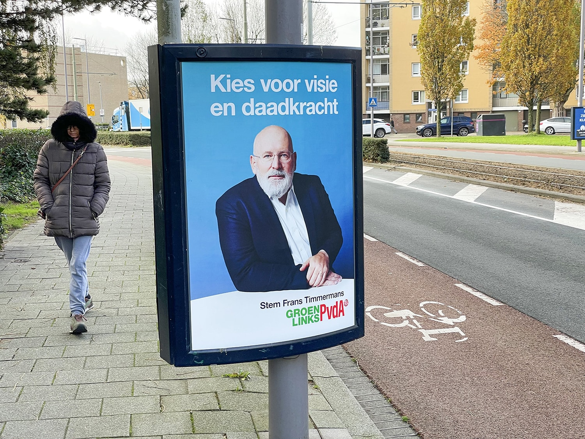
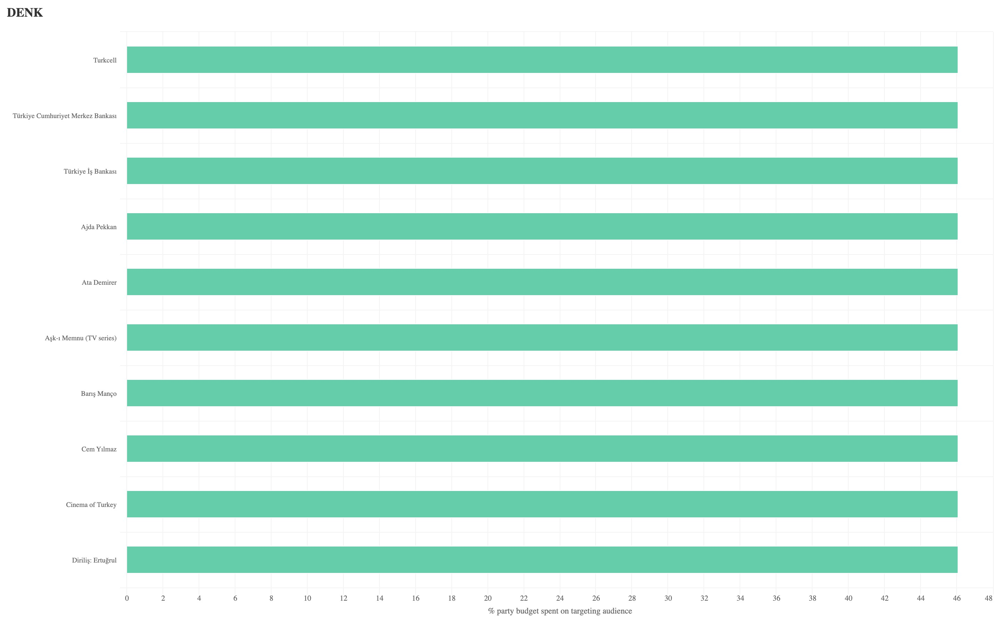
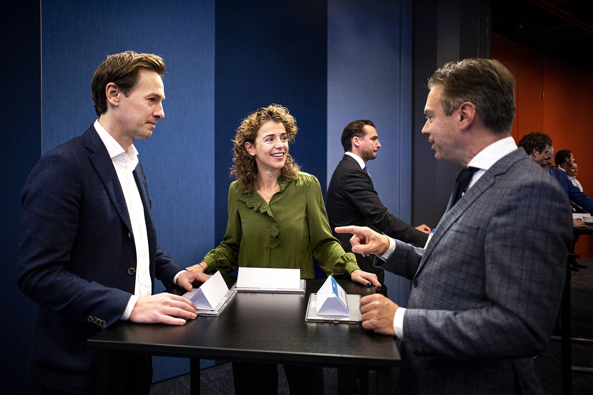
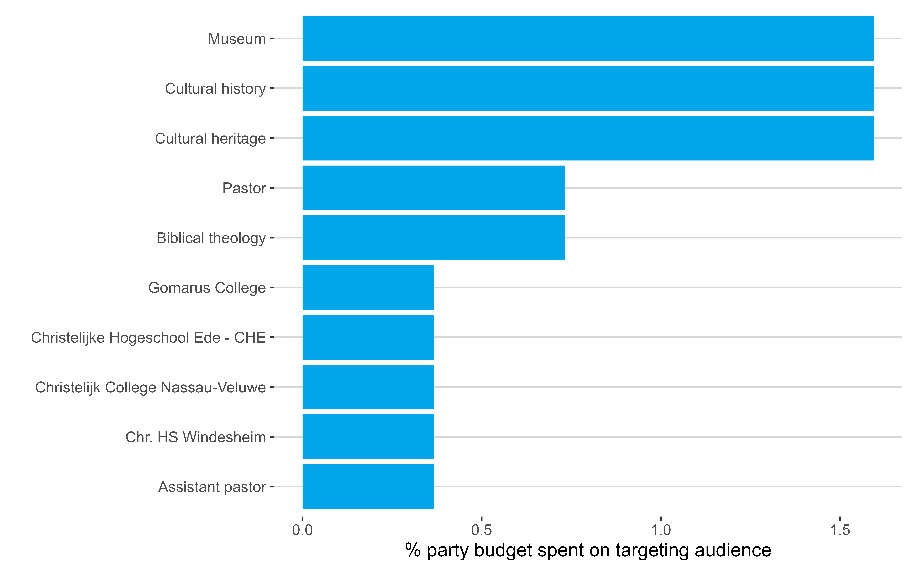
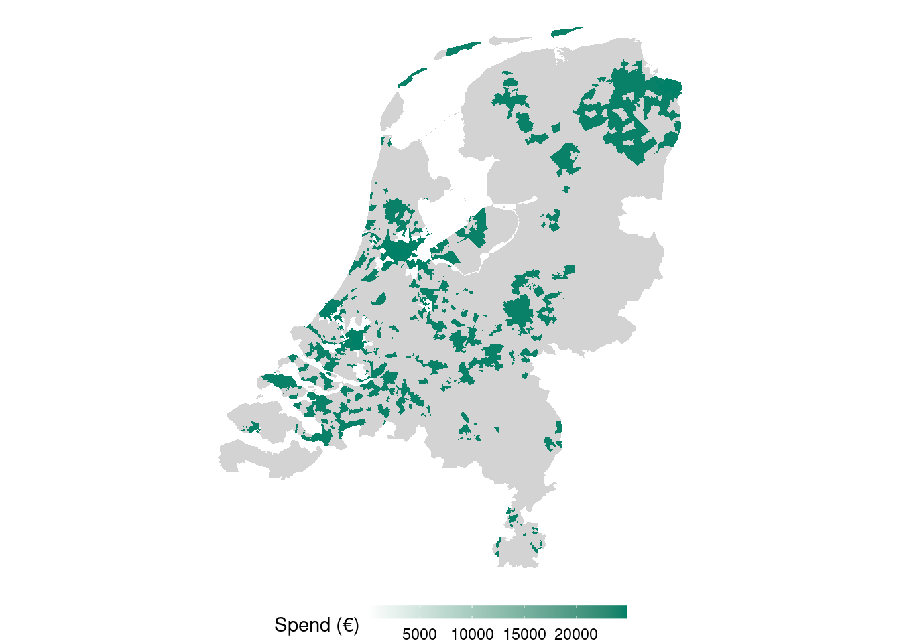

De Campagnemonitor 2023
Blog
Uitgaven
Focuspunten
Uitgaven per Focusgroep
Publieksgerichtheid
Locatie
Demografie
Achtergrond
groene.nl
Blog
Hoe jagen politieke partijen op jouw stem, wat willen ze juist niet dat je ziet en hoeveel geld geven ze daaraan uit? In aanloop naar de Tweede Kamerverkiezingen monitoren we politieke microtargeting.
D66 spendeert in een klap tienduizenden euro’s aan campagne door ‘menselijke fout’
De ruim 41.000 euro die D66 aan advertenties op Facebook en Instagram uitgaf op zaterdag 2 november was…
20 nov. 2023
Mats Cooper en Fabio Votta
NSC doet online niets
Het is deze campagne vaak genoeg opgemerkt: alles draait om Pieter Omtzigt, voor…
17 nov. 2023
Eva Hofman, Joris Veerbeek, Coen van de Ven en Fabio Votta

Verenigd Links geeft het meeste geld aan sociale mediabedrijven
GroenLinks-PvdA trekt vlak voor de verkiezingen een eindsprintje. Begin deze maand had die partij al een…
15 nov. 2023
Eva Hofman, Joris Veerbeek, Coen van de Ven en Fabio Votta

Denk microtarget op Turkse profielen
Denk doet tijdens de online campagne aan etnisch profileren. De partij richt haar pijlen online op Turkse kiezers en scheert daarbij langs de randen van de Europese…
14 nov. 2023
Eva Hofman, Joris Veerbeek, Coen van de Ven en Fabio Votta

Meta laat SGP veertig keer meer betalen dan de VVD
Meta discrimineert enorm in de prijs die het rekent voor politieke advertenties, volgens eigen cijfers. Dat onderzocht…
14 nov. 2023
Eva Hofman, Joris Veerbeek, Coen van de Ven en Fabio Votta

ChristenUnie mikt op ‘dominees’ en ‘bijbelstudies’
De ChristenUnie richt online haar pijlen op profielen van christelijke kiezers en zoekt daarbij de randen op van Europese privacyregels. De partij betaalde het moederbedrijf…
13 nov. 2023
Eva Hofman, Joris Veerbeek, Coen van de Ven en Fabio Votta

CDA sluit online Groningers uit
Het CDA sluit in haar onlinecampagne kiezers uit in Oost-Groningen, waarvan een groot deel op de aardgasbel woont. Dat blijkt uit advertentiegegevens van Meta, het…
7 nov. 2023
Eva Hofman, Joris Veerbeek, Coen van de Ven en Fabio Votta
Geen overeenkomsten